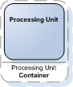
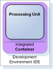
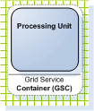
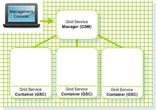

Section Summary: GigaSpaces runtime components
GigaSpaces Runtime and Administration Components
Processing Unit Container
|
A container that hosts a Processing Unit.
Key sentence: The Processing Unit can run only inside a hosting Processing Unit Container. |

A Processing Unit Container |
Types of Processing Unit Containers
Integrated Processing Unit Container
A container that runs the Processing Unit inside an IDE (e.g. IntelliJ IDEA, Eclipse).
Key sentence: The integrated processing unit container enables to run the Processing Unit inside your IDE for testing and debugging purposes.
|

An Integrated Processing Unit Container running a Processing Unit
inside an IDE
|
Service Grid Processing Unit Container (AKA SLA Driven Container)
A Processing Unit Container which runs within a Grid Service Container.
It enables running the processing unit within a service grid, which provides self-healing and SLA capabilities to components deployed on it. |

A Service Grid Processing Unit Container running a Processing Unit
inside an IDE
|
Service Grid
A set of GigaSpaces Containers (GSC) managed by a GigaSpaces Manager (GSM).
The containers host various deployments of Processing Units and Data Grids.
Each container can be run on a separate physical machine.
Key sentence: A set of managed containers hosting Processing Unit Deployments |

A Service Grid composed of a Grid Service Manager which manages 3 Grid Service Containers |
GigaSpaces Container (GSC)
A Service Grid component which hosts Processing Unit instances.
A machine can run one or more GSC processes. Each GSC communicates with a manager component (GSM). The GSC receives requests to start/stop a processing unit instance, and sends information about the machine which runs it (OS, processor architecture, current memory and CPU stats), the software installed on it and the status of processing unit instances currently running on it.
Key sentence: A set of managed containers hosting different Processing Unit Instances |
|
GigaSpaces Manager (GSM)
The GSM is a Service Grid component which manages a set of GigaSpaces Containers (GSC).
A GSM has an API for deploying/undeploying processing units. When a GSM is instructed to deploy a Processing Unit, it allocates an appropriate, available GSC and tells that GSC to run an instance of that processing unit. It then continues to monitor that the GSC is alive and the SLA is not breached.
Key sentence: A GSM manages all the running containers in the network and deploys processing units to them. |
|
Management UI
The GigaSpaces Management Center, also known as the GigaSpaces UI or GS-UI.
A monitoring, management and deployment console.
Enables the user to view and interact with the runtime components running in the network.
|
|
|